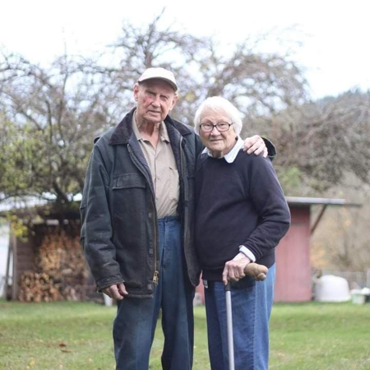

Finding simplicity in life
November 16, 2016 | 3 comments
Life can get complicated really quickly, but it doesn't have to be! There are many ways to simplify your life here, a few of which we've explored in the past. How you can find simplicity in the life in our retreat is like no other, though.
It’s established that bonding with animals can help people who are afflicted by different types of neurosis, psychosis or trauma from past experiences The main thing we’re trying to focus on is helping veterans with PTSD, but that does not exclude our wish or willingness to help veterans with other types of wounds, or even anybody.
Come join fellow veterans on our horse retreat for those of us with invivible illnesses. Onsite housing for veterans who are visiting from out of the area so that they do not incur additional expenses for a hotel or motel.
The Carlsons advances in age — Jim is nearly 91 and Lily is 93 — they’ve been inclined to share their farm with those in need of serenity. status to convert their farm to a center for hippoterapy — horseback riding as a therapeutic or rehabilitative treatment — to assist veterans with posttraumatic stress disorder (PTSD). Studies have shown that hippotherapy and equine therapy can help with communication, trust, confidence, self acceptance, as well as decrease isolation and improve social skills. It’s established that bonding with animals can help people who are afflicted by different types of neurosis, psychosis or trauma from past experiences.
“What we want to do is help military families, not only help the individual [with PTSD], but treat the whole family. They all are affected by what happens to one individual. -Lily We are both veterans ourselves, Jim served in the navy for two years during World War II and Lily served as a navy nurse during the Korean and Vietnam wars. have seen the horrors of the disorder in their nephew who served in the Vietnam war.
We don't have PTSD but we have seen the horrora of PTSD with our nephew. We thought he was doing great,” said Jim. “He had finished his education. He got a good-paying job. But one day, he just went out and ended his life.
We are located off 151st Ave SE, Renton nested near a grove of Japanese Cedars and are looking for volunteers who will help groom and ride the horses as well as assist with the construction of the covered arena.
CONTINUE READING